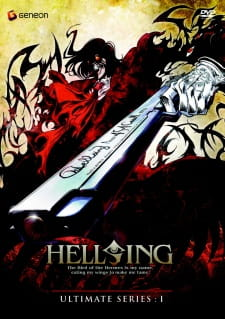
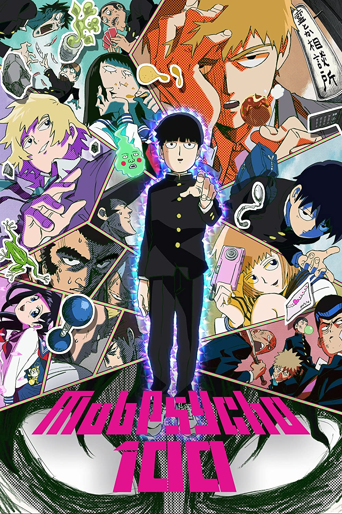

Főoldal
Sorozatok
Emberek
Próba Ödön
Felületkezelés
Nem jelent meg új rész!
A barátaid ezt is nézik:

A Király
Epizódok: 10
Átlag: 3,8/5
Mikó
Jimmy életéről készült tíz részes sorozat. Az életrajzi ihletésű széria az énekes legenda felemelkedését mutatja be, amely bővelkedett konfliktusokban. Míg a történet legkevésbé sem fest idealizált képet a sztárról, visszarepít az időben és szól arról is, hogy a rendszerváltás milyen hatással volt a magyar zenésztársadalomra. Zámbó Jimmy különböző életszakaszait két kiváló színész alakítja: Nagy Ervin a már befutott, népszerű, míg Olasz Renátó az énekes fiatalkori, útkereső énjét formálja meg. Ahogy feleségét Zámbó Editet is két nagyszerű színésznő Schell Judit és Staub Viktória formálja meg.
Néző: 350454
Mob Psycho 100
Epizódok: 30
Átlag: 4,7/5
Mikó

Kayema Shigeo nem éppen átlagos középiskolai diák, akit a tanára, Reigen csak Mobnak (tömegnek vagy háttérkarakternek) hív. Mob bizonyos pszichikai erőkkel rendelkezik, amelyek lehetővé teszik számára, hogy tárgyakat repíthessen, hajlíthasson vagy éppen porig zúzhasson. Ehhez hozzájárul, hogy képes látni a szellemeket is. Vagyis egyfajta médiumként funkcionál. Viszont ha az érzelmi kapacitása eléri a száz százalékot, akkor a dolgok általában katasztrofális méreteket öltenek. A történet a szellemek és az ilyen "médiumok" köré épül, ONE-hoz méltó humorosabb köntösben.
Néző: 504523
Cyberpunk: Edgerunners
Epizódok: 10
Átlag: 4,3/5
Mikó
A korrupcióban és kibernetikus implantátumokban bővelkedő disztópiában egy tehetséges, de vakmerő utcakölyökről szól a sorozat, aki próbál túlélni a technológia-, és a testmódosítás-megszállott jövőbeli városban. Mivel nincs vesztenivalója, ezért edgerunnernek áll, fegyveres törvényenkívülinek, őket hívják cyberpunkoknak.
Néző: 345454